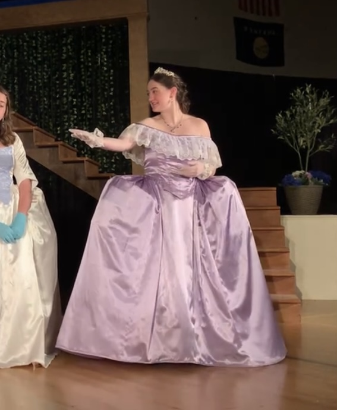
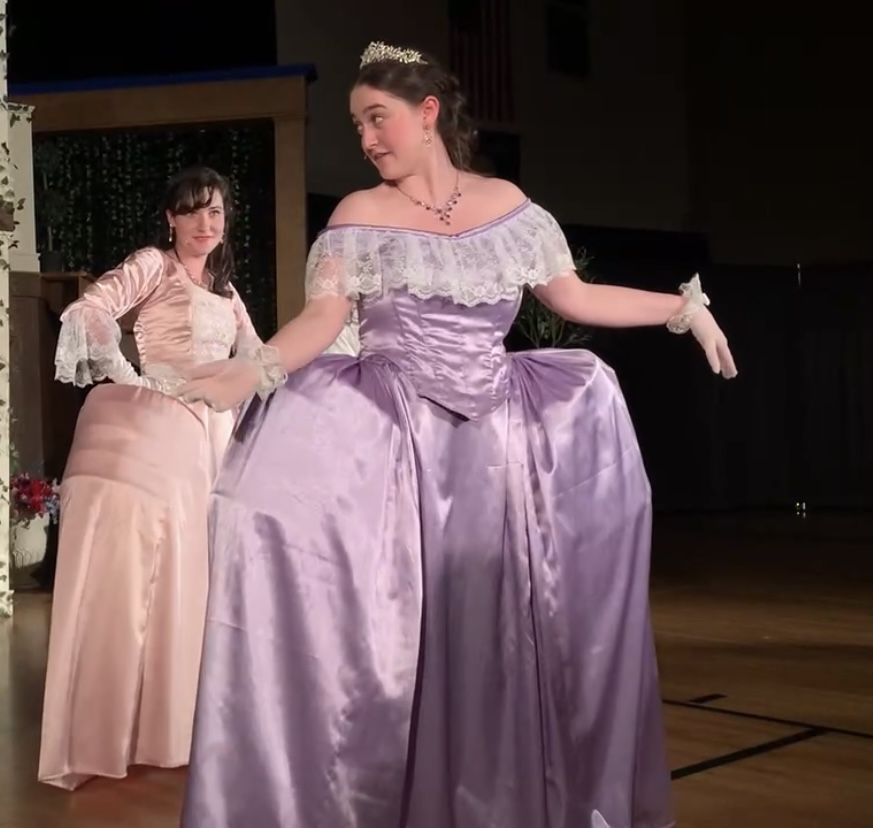
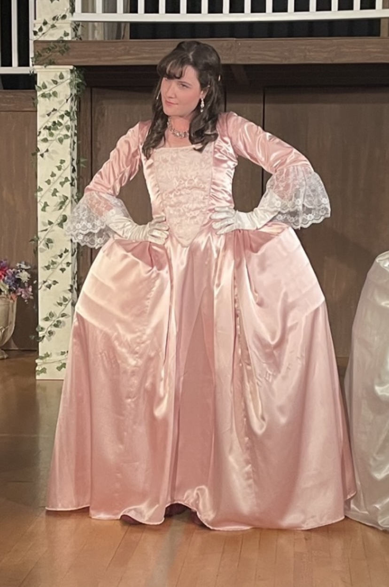
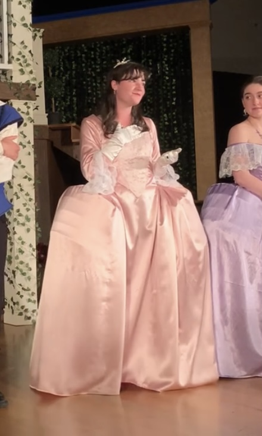
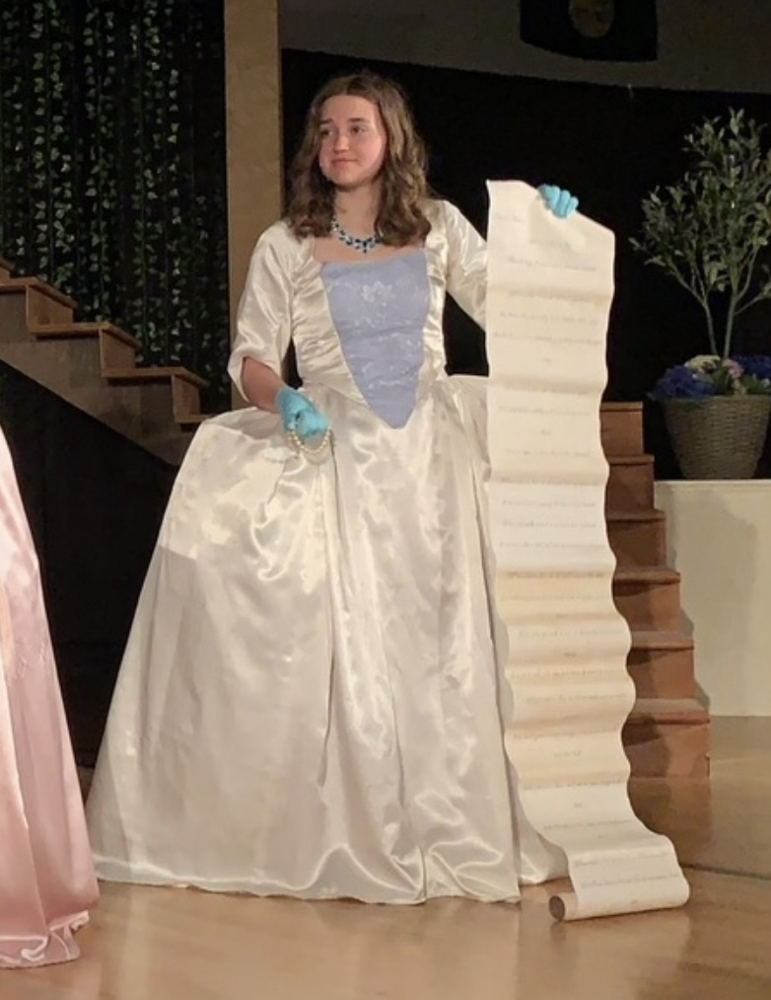
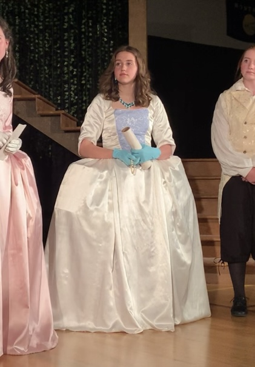
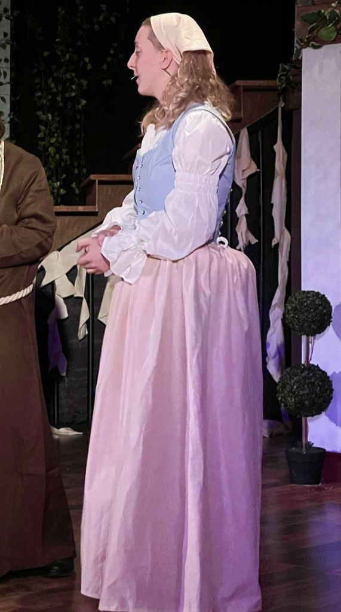
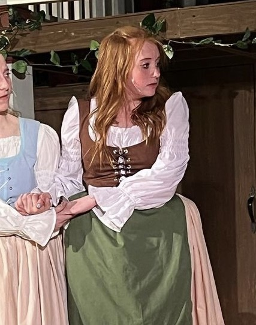
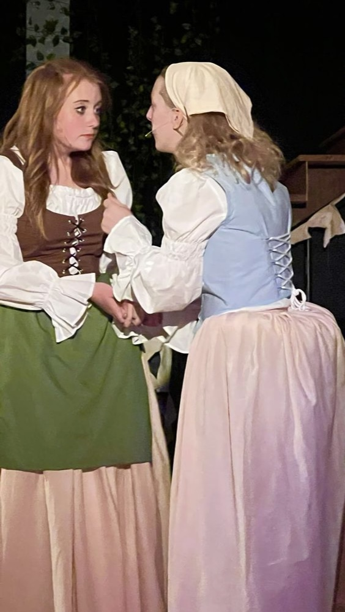

Female Garments


"Princess of France"
Love's Labour's Lost
Florence-Carlton Shakespeare Company 2021
Design: Hannah Brooklynn McLean
Bodice and skirt made by myself. Shape of skirt was created with a double pannier hoop support. Snaps used on skirt and double pannier to allow actress to complete quick changes to double as Sir Nathaniel.


"Rosaline"
Love's Labour's Lost
Florence-Carlton Shakespeare Company 2021
Design: Hannah Brooklynn McLean
Bodice and skirt made by myself. Shape of skirt was created with a double pannier hoop support.


"Maria"
Love's Labour's Lost
Florence-Carlton Shakespeare Company 2021
Design: Hannah Brooklynn McLean
Bodice and skirt made by myself. Shape of skirt was created with a double pannier hoop support. Snaps used on skirt and double pannier to allow actress to complete quick changes to double as Jaquenetta.

"Isabella"
Measure for Measure
Florence-Carlton Shakespeare Company 2022
Design: Nyreec Adams
Skirt and bum roll made by myself. Bodice made by Nyreec Adams. Shape of skirt was created with a bum roll to build out the back and sides of the actors' waist. Snaps used on skirt to allow actor to complete quick changes to double as Elbow.


"Mariana"
Measure for Measure
Florence-Carlton Shakespeare Company 2022
Design: Nyreec Adams
Bodice, skirt, and bum roll made by myself. Shape of skirt was created with a bum roll to build out the back and sides of the actress' waist.